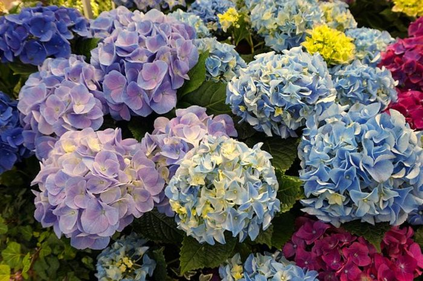
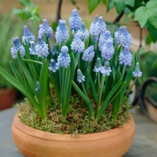
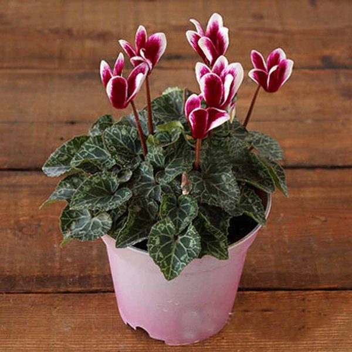
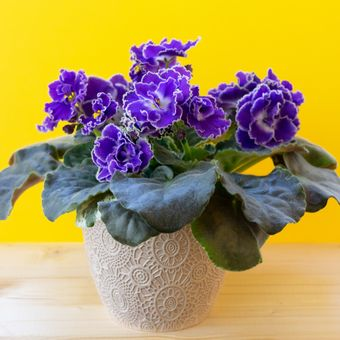
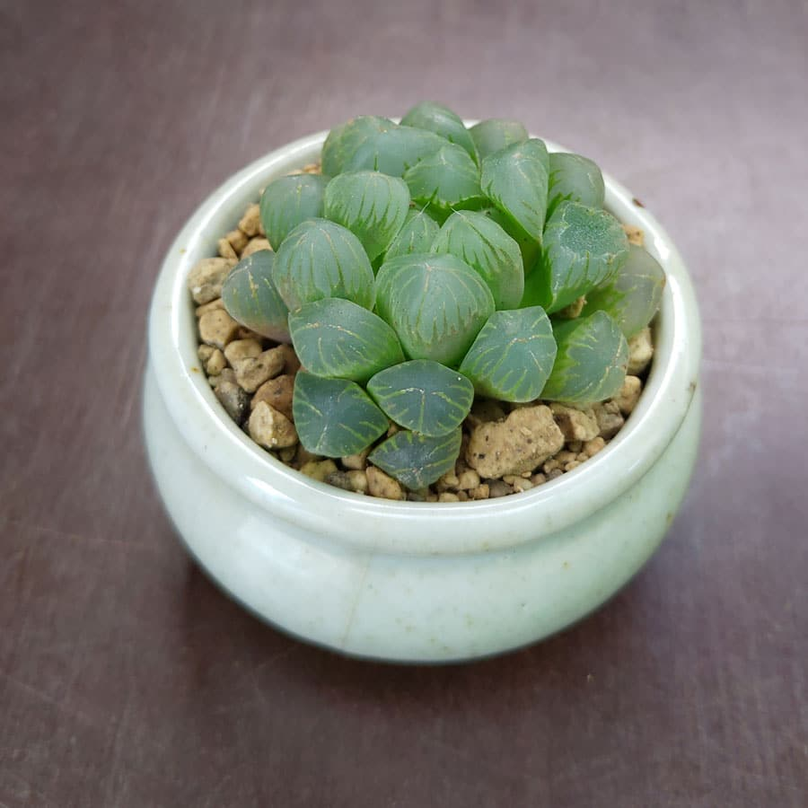

Hobi berkebun dan merawat tanaman hias
Berkebun dan memelihara tanaman hias merupakan kegiatan yang banyak dilakukan masyarakat saat mengisi waktu luang, selain itu juga banyak manfaat dari berkebun atau memelihara tanaman hias yaitu,
Yang pertama mempercantik rumah, tanaman hias saat ini banyak dimanfaatkan untuk mempercantik rumah. Tidak hanya untuk diletakkan di luar rumah saja, tetapi juga banyak yang sudah menjadikannya sebagai bagian dari desain interior di dalam rumah.
Meningkatkan oksigen dalam rumah, tanaman menyrap karbondioksida dan menghasilkan oksigen saat melakukan proses fotosintesis tentu akan membuat ruangan dimana tanaman diletakkan mendapat tambahan oksigen. Tentu selain memperindah juga membuat ruangan terasa sejuk
Menjadi peluang bisnis, selain menjadi hobi membududayakan tanaman hias juga bisa dijadikan peluang didukung maraknya tren tanaman hias saat ini tentu akan menjadi peluang bisnis yang cukup menjanjikan.
Hydrangea
Hydrangea adalah spesies tumbuhan berbunga yang berasal dari Asia Timur dan Asia Selatan (Jepang, Tiongkok, Himalaya) Hortensia juga dikenal dengan nama kembang bokor, Bunga berwarna putih pada sebagian besar spesies, tetapi beberapa spesies terutama H. macrophyllamempunyai bunga yang bisa berwarna biru, merah, merah jambu, atau ungu bergantung pada tingkat pH tanah.
Muscari
Muscari Berasal dari Asia, terutama dari Cina dan Jepang, di mana mereka digunakan sebagai tanaman hias, kuliner dan obat-obatan, liriopes, tanaman keluarga Liliaceae dan dekat dengan ophiopogon, bunga muscari suka semak belukar segar berbayang dan sedekat mungkin dengan akar pohon.
Cyclamen
Cyclamen berasal dari daratan Eropa memiliki corak daun yang beraneka macam. Warna mahkota bunganya mulai dari putih, pink, hingga ungu. Banyak spesies yang memiliki dua warna. Namun beberapa jenis hanya memiliki satu warna bunga saja.
African violet
African violet memiliki ukuran kecil sekitar 6 sampai 15 cm. Tanaman bunga ini memiliki daun yang tebal dengan tekstur yang hampir mirip dengan bludru. warna bunnga african violet biasanya biru keunguan namun, ada juga yang berwarna merah muda dan ungu tua.
Haworthia
Haworthia merupakan tanaman asal Afrika Selatan memiliki daun tebal berbentuk mawar. Mereka bisa memiliki antara 30 dan 40 daun lonjong dan lanset Warna hijau muda yang sangat tajam dengan bagian bawah cembung dan permukaan atas yang rata.